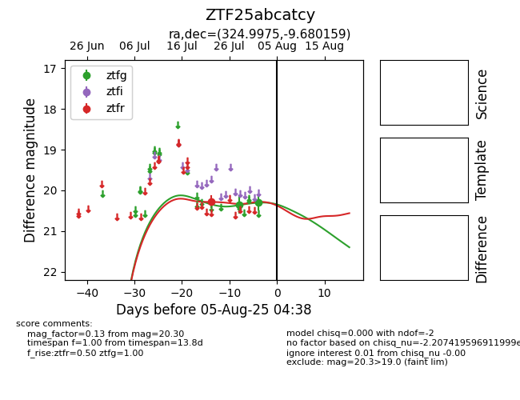

Target ZTF25abcatcy at 2025-08-05 04:38, see:
FINK: fink-portal.org/ZTF25abcatcy
Lasair: lasair-ztf.lsst.ac.uk/objects/ZTF25abcatcy
ALeRCE: alerce.online/object/ZTF25abcatcy
alt names
ZTF25abcatcy (ztf,fink)
coordinates:
equatorial (ra, dec) = (324.9975,-9.68016)
galactic (l, b) = (44.6729,-41.70390)
photometry
last ztfg=20.30, ztfr=20.28
2 ztfg, 1 ztfr detections
